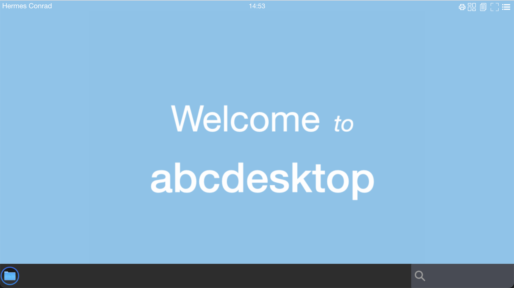
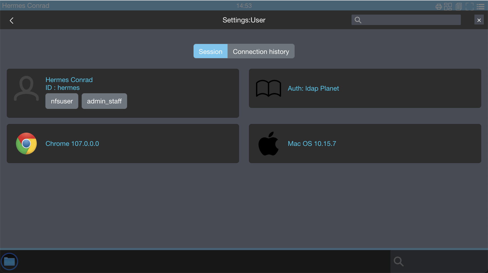
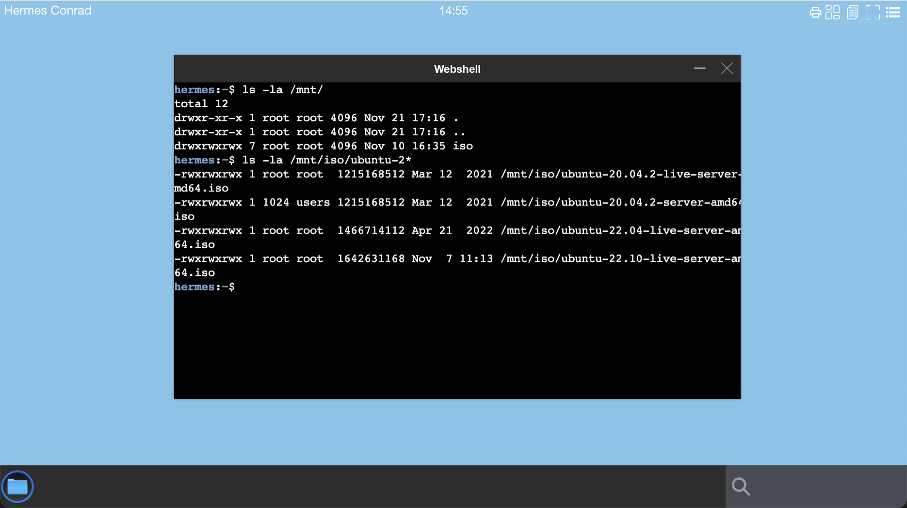

Define rules to mount a nfs volume inside user pod
Only supported in abcdesktop release 3.0
An nfs volume allows an existing NFS (Network File System) share to be mounted into a Pod. NFS volume can be pre-populated with data, and can be shared between pods. NFS can be mounted by multiple writers simultaneously.
You must have your own NFS server running with the share exported before you can use it.
Update the od.config file
Update the od.config to add
- a label to user
- add a desktop rules to match the label
Add a label in the auth provider
In this example, we add a label nfsuser as a condition to mount nfs resource
In the auth provider add a dummy condition or a memberOf condition. All types of conditions are supported, the goal is only to get a label.
Update the od.config file and look for the default ldapconfig dictionnary
Add a dummy condition
ldapconfig : {
'planet': {
'default' : True,
'ldap_timeout' : 15,
'ldap_basedn' : 'dc=planetexpress,dc=com',
'users_ou' : 'ou=people,dc=planetexpress,dc=com',
'servers' : [ 'ldap://openldap.abcdesktop.svc.cluster.local:30389' ],
'serviceaccount': { 'login': 'cn=admin,dc=planetexpress,dc=com', 'password': 'GoodNewsEveryone' },
'policies': {
'acls': None,
'rules' : {
'rule-dummy': {
'conditions' : [ { 'boolean': True, 'expected' : True } ],
'expected' : True,
'label': 'nfsuser' } } } } } }
Or Add a memberOf condition
ldapconfig : {
'planet': {
'default' : True,
'ldap_timeout' : 15,
'ldap_basedn' : 'dc=planetexpress,dc=com',
'users_ou' : 'ou=people,dc=planetexpress,dc=com',
'servers' : [ 'ldap://openldap.abcdesktop.svc.cluster.local:30389' ],
'serviceaccount': { 'login': 'cn=admin,dc=planetexpress,dc=com', 'password': 'GoodNewsEveryone' },
'policies': {
'acls': None,
'rules' : {
'rule-nfsuser': {
'conditions' : [ { 'memberOf': 'cn=admin_staff,ou=people,dc=planetexpress,dc=com', 'expected' : True } ],
'expected' : True,
'label': 'nfsuser' } } } } }
Add a rule in the desktop.policies
In this example, we define entries :
nfsserveris192.168.7.101(can also be a FQDH)pathis/volume1/isostoremountPathis/mnt/iso
The mount command become like:
mount -t nfs 192.168.7.101:/volume1/isostore /mnt/iso
Update the desktop.policies dictionnary and add a new key rules.
In the new rules define a new entry nfsuser.
The name of the entry MUST match a user label tag, else the mount point is not created.
In this example the label is defined as nfsuser, but you can set differents values.
Then set nfs descriptions as you can read in kubernetes nfs volume
desktop.policies: {
'acls' : {},
'rules': {
'volumes': {
'nfsuser': {
'type': 'nfs',
'name': 'isostore',
'server': '192.168.7.101',
'path': '/volume1/isostore',
'mountPath': '/mnt/iso',
'readOnly': True } } } }
Apply the new od.config file
Save your local changes in od.config, and update the new configmap abcdesktop-config
kubectl delete configmap abcdesktop-config -n abcdesktop
kubectl create --from-file=od.config -n abcdesktop
Restart pyos
Restart pyos pods
kubectl delete pod -l run=pyos-od -n abcdesktop
pod "pyos-od-5586b88767-64jwt" deleted
Create a new desktop for Hermes Conrad and list nfs files
Open the url http://localhost:30443, in your web browser, to start a simple user's pod.
http://localhost:30443
- Login with a user
Hermes Conradfor example.Hermes Conradis member ofadmin_staff.

- Check that the label
nfsuseris listed

- Run a web shell to list the
/mnt/isodirectory content

You can define many rules from LDAP groups. To get more informations about rules, read the authentification rules section